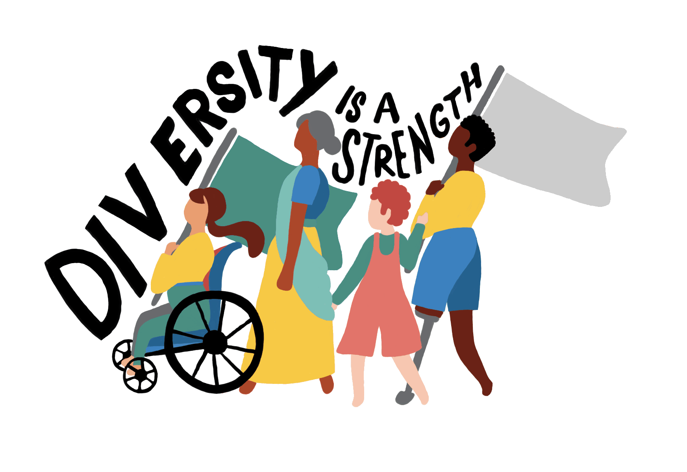

CULTURAL DIVERSITY
ABOUT

Cultural diversity is about appreciating that society is made up of many
different groups with different interests, skills, talents and needs.
Information
In today's globalised world, cultural diversity plays a
pivotal role in shaping our societies and workplaces.
Cultural diversity refers to the presence of various cultural groups and individuals from
different backgrounds within a single community or organization.
In this document, we will explore the significance of cultural diversity, its many facets, its challenges, and its many benefits. We aim to shed light on how embracing cultural diversity enriches our lives and helps us build more inclusive and vibrant communities.
Cultural diversity is celebrated every year on 21 May.
Importance Of Cultural diversity
The beauty of cultural diversity lies in its ability to enrich our lives in ways we may not even realize.
Assimaliting
1.Learn about yourself.
2.Learn about different cultures.
3.Interact with diverse groups.
5.If you see anyone who is being culturally
insensitive,
speak out against it
6.Don’t force your beliefs on people with opposing views
7.Travel the world as much as you can to take
part in cultures and understand
them from the source
Benefits of Cultural Diversity
